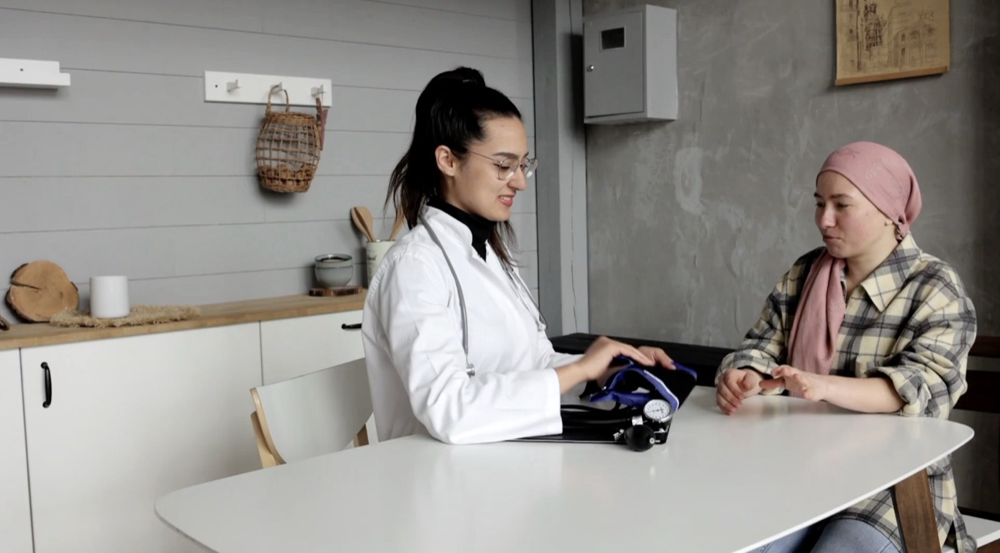

Makieta robocza - nie trafia na produkcję
Zostały dwa warianty z pierwszej rundy. Karta na zdjęciu i trzy kroki z portretem wypadły. Poniżej poprawki, o które prosiłeś.
Zdjęcie przestaje być tłem: własna kolumna dla tekstu na ciepłym kremie, fotografia bez klina i bez przyciemnienia obok.
object-position: center center),
kolumna z fotografią poszerzona, żeby scena się mieściłaHospicjum domowe dla dorosłych i dzieci
Bezpłatna opieka lekarska, pielęgniarska i rehabilitacyjna nad nieuleczalnie chorymi - u nich w domu. Olkusz, Pińczów, Kazimierza Wielka i okolice.
Wolisz porozmawiać? 698 887 816
Zero zdjęcia na pierwszym ekranie. Zdanie, jeden monochromatyczny wash i trzy telefony pod spodem.
inset box-shadow, nie tło siatki - nie ma
fałszywej ramki wokół całego paskaHospicjum domowe dla dorosłych i dzieci
Bezpłatna opieka lekarska, pielęgniarska i rehabilitacyjna nad nieuleczalnie chorymi - tam, gdzie czują się bezpiecznie.
B jest piękny i najszybszy, ale hospicjum bez twarzy na pierwszym ekranie dłużej
buduje zaufanie. Gdybyś chciał B, dołożyłbym zdjęcie do sekcji tuż pod hero,
żeby pierwszy scroll je odsłaniał. Powiedz, który wchodzi na produkcję -
wtedy przenoszę go do build.py i kasuję makietę.